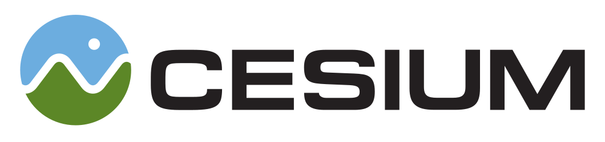

- Local links
-
Documentation
- The complete API documentation and reference.
-
Hello World
-
The simplest possible Cesium application.
-
Cesium Viewer
-
A simple Cesium reference application which allows you to browse the globe and select from a variety of imagery and terrain
layers as well as load CZML, GeoJSON, and other formats supported by Cesium. There is also a built version ready to be deployed on your own web server.
-
Sandcastle
- Cesium's live code editor and example gallery. Browse examples highlighting features of the Cesium API and edit and run
them all in your web browser. Cesium applications created in Sandcastle can even be saved and downloaded.
- Unit Tests
-
Run all tests
-
Run with WebGL validation
-
Select a test to run
-
Run only WebGL tests
-
Run only non-WebGL tests
- External links
-
Homepage
- The official Cesium homepage
-
Tutorials
- Step by step guides for learning to use Cesium
-
Forum
- Our forum and mailing list, questions and feedback welcome from all skill levels
-
GitHub
- The official Cesium GitHub repository
-
Showcases
- Demos and information about projects using Cesium
-
WebGL Report
- Provides technical information about WebGL capabilities supported by your browser